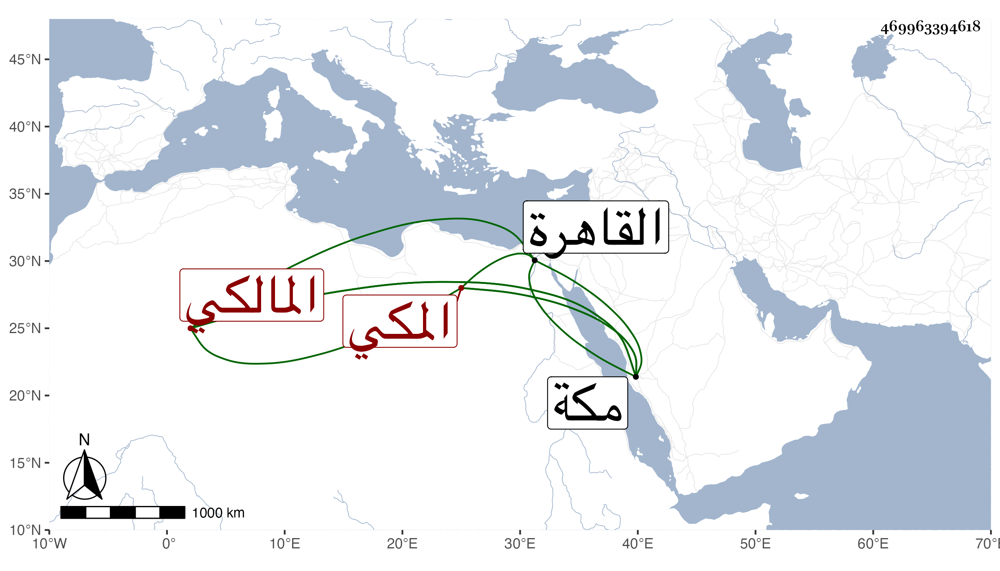

0902Sakhawi.DawLamic.ITO20230111-ara1.EIS1600.469963394618
Biography ID: 469963394618
282
جعفر بن يحيى بن محمد بن عبد القوي الغياث أبو الغيث المكي المالكي أخو معمر وفضل الآتيين وأبوهما ويعرف بابن عبد القوي . ولد في ذي الحجة سنة ست وخمسين وثمانمائة بمكة ونشأ فحفظ القرآن وكتبا ، وعرض بالقاهرة على شيوخها وعلى كاتبه واشتغل في الفقه والعربية وغيرهما وممن أخذ عنه العربية يحيى العلمي والجوجري بل اختصر شرحه للشذور من أجله وكذا أخذ في الفقه عن أولهما وحضر السنهوري واللقاني وغيرهما ولكن جل انتفاعه انما هو بأخيه ، ولازمني في أشياء بل قرأ على جل المنسك الكبير لابن جماعة وقدمه البرهاني ابن ظهيرة للتوقيع ببابه فسبق من قبله لثقته وأمانته وعقله وتواضعه وخفة مؤنته بحيث أقبل عليه أصحاب الاشغال وتميز في ذلك . مات في أواخر شعبان سنة أربع وتسعين وأنا بمكة وشهدت الصلاة عليه ودفنه وتأسفنا على فقده رحمه الله .
